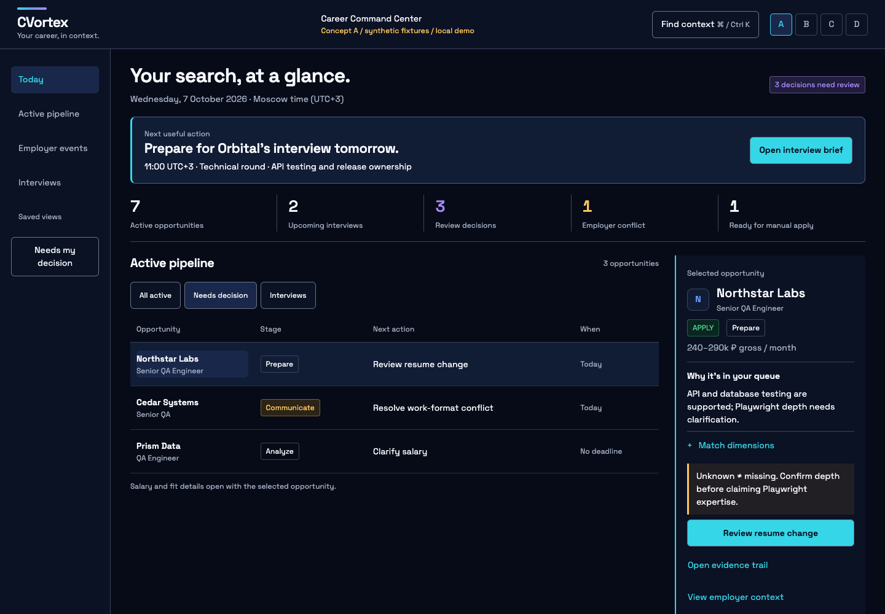
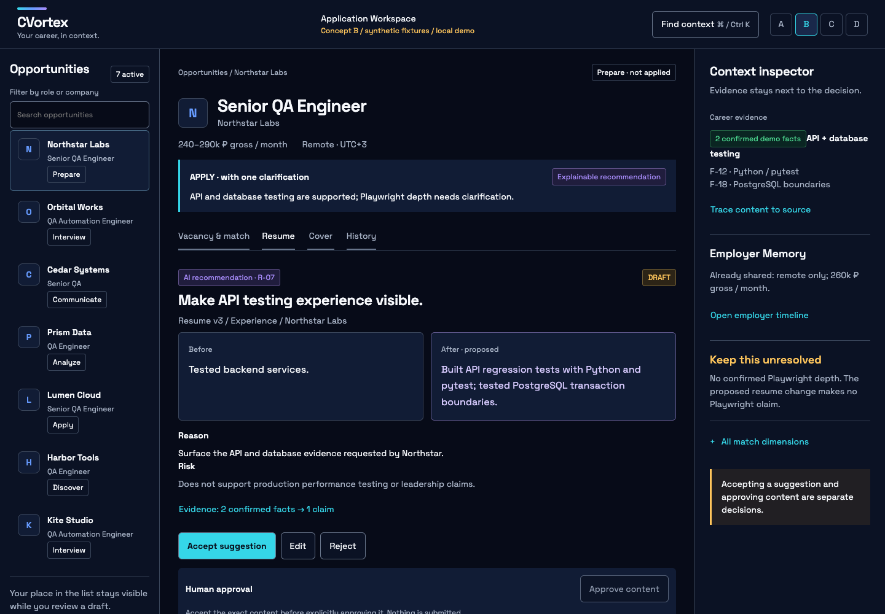
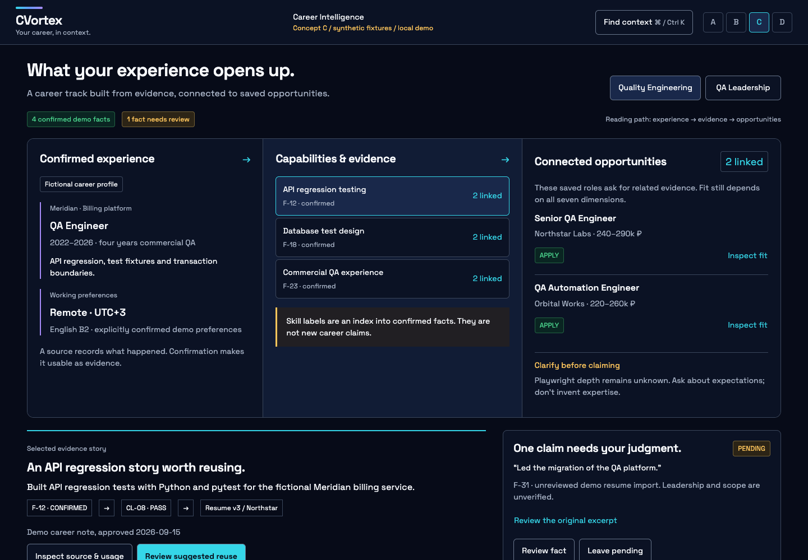
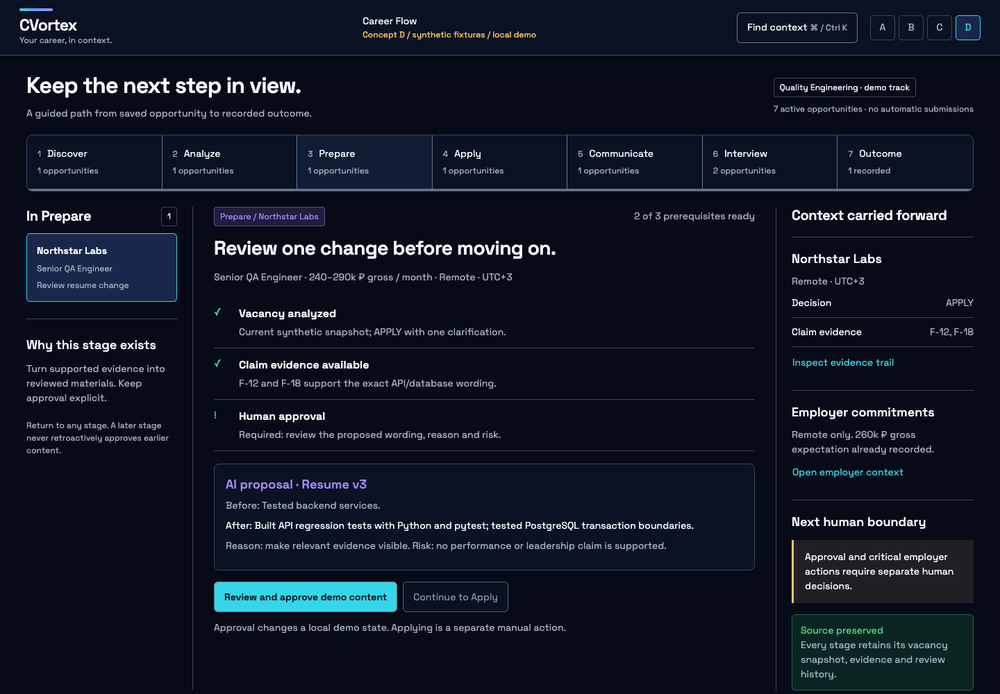

A · Career Command Center
High densityStart with what needs attention: active pipeline, urgent decisions, interviews and employer signals.

Compare the organizing idea, then try the interaction. These are local research prototypes. Your choice comes before final design decisions.
Start with what needs attention: active pipeline, urgent decisions, interviews and employer signals.

Keep one opportunity in focus: vacancy, resume diff, evidence and employer commitments stay together.

Start with what is confirmed: experience stories connect to capabilities and saved opportunities.

Start with your current stage: see what is ready, what blocks progress and the next human action.

Recommended overall and for the current stage: B, with capabilities limited to the implemented product surface. Borrow a small review inbox from A, evidence stories from C and local readiness checks from D. Keep one organizing idea: the opportunity workspace.
Nothing here connects to an API or sends an application. Prototype state is kept in memory and resets on reload. Each concept also includes loading, empty and error previews, keyboard context search and source inspection. Production, design tokens and existing design documentation are unchanged.